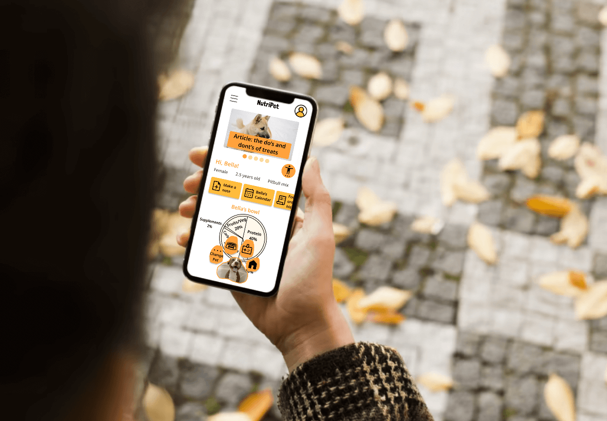
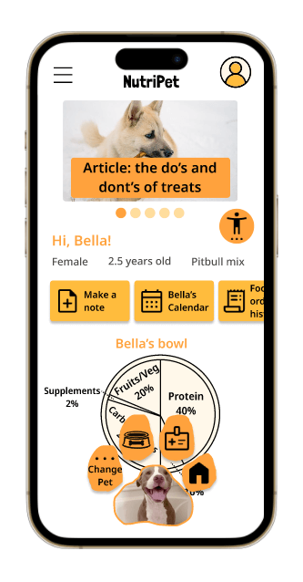
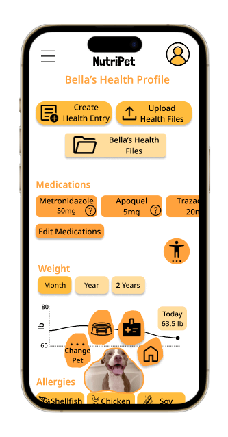
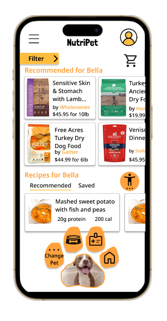

Nutripet
An app designed to help track pet health and nutrition and recommend healthy brands at a discounted rate.
Duration
September 2022 - January 2023

An app designed to help track pet health and nutrition and recommend healthy brands at a discounted rate.
September 2022 - January 2023
Many pets develop allergies and other health issues that demand a strict diet. Pet owners often feel overwhelmed about tracking their pets’ information and finding the right pet foods in an oversaturated market.
How might we help pet owners track their pets' health and find healthy and affordable pet foods?
Pet owners in my community were questioned about what they would want from a pet tracker app. It was assumed beforehand that pet owners would only want an app to keep important pet information on hand and in one place. After conducting research however, it was found that pet owners also would like a healthy food/treat database of offerings to search through and order for their pets with allergies and other special diet needs.
The goals, frustrations and backgrounds of users interviewed were summarized into two user personas.
Age: 43
Education: Masters
Goals
Hometown: Raleigh, NC
Job: Psychotherapist
Frustrations
As a parent and therapist, Xavier struggles to find time to research the best foods for his guide dog Cora. Xavier cannot read ingredient labels in person since he is visually impaired. He recently learned Cora has gluten intolerance and wants to keep note of any reactions she has to food.
Age: 31
Education: High school
Goals
Hometown: Oaxaca, MX
Job: Small business owner
Frustrations
Maria recently immigrated to Austin, TX from Mexico with her partner and runs a small business. She loves her rescue dog Bella, but has recently discovered Bella has food allergies and skin issues. She wants a free app that translates to Spanish and that recommends affordable and healthy foods for Bella.
Paper wireframes iterated through different elements to find compromises between function and visual appeal, such as navigational buttons organized into a paw print.
![Paper wireframes for Nutripet, all different versions of the homepage. First screen has menu navigation buttons organized into a pawprint at top and information in a single column below. Second screen has an account button and the logo at the top and a line of tabs for subpages below, one for each pet. Third screen has a hamburger menu in a top corner and a single column of information sections that when you tap lead to their own pages. The pawprint button menu is at the bottom. Fourth screen has the logo and hamburger menu at the top, an account/pet button in center, three columns of information, and a fun facts slideshow. Fifth screen was the favorite, with a hamburger menu, logo and account button at top, introduction text, two columns about health and food, then a pawprint button menu at bottom. Sixth screen has the line of tabs for subpages on each pet, and the pawprint button menu at bottom.](img/nutripet/wireframes.png)
Icons were implemented in sections like the allergies list for broader user understanding, and food listings were designed as interactive 'cards' to organize the page and allow for easy interaction. The 'filter' tab lets users control for factors like price point, ingredients, and pet age.
Participants tested the low-fidelity prototype according to prompts to complete user flows such as purchasing specific food for a pet. Many did not recognize the navigation menu as a pawprint and recommended it be redesigned for clarity. It was suggested that font and button size be increased. Users did not understand some of the icons and wanted interactive and noninteractive elements to be more clearly differentiated.
User feedback was implemented in the mockups for the app.
Home Page
Pet Health Page
Food Listings Page
For the high-fidelity mobile app prototype, user recommendations such as 'scroll up' buttons, clearer user flows, and descriptions of sections, were included.
Icons and layouts that make sense to the designer aren't always understood or interpreted in the same way by users.
Design guideline 'sticker' sheets help keep a design organized and help more clearly define interactive and non-interactive elements.
Sometimes the design that is the most aesthetically pleasing doesn't translate to every user, and is not practical for the product.